# Paquetes
library(sf)
library(dplyr)
library(ggplot2)
library(viridis)
library(SpatialKDE) # KDE raster a partir de puntos
library(exactextractr)10 Inferencia Espacial
KDE y IDW
10.1 Objetivos del Módulo
- Conocer los fundamentos teóricos de la inferencia espacial
- Aprender a construir indicadores con Kernel Density Estimation (KDE) e Intertpolación de Inverso a la Distancia Ponderada (IDW)
- Explorar su aplicación espacial en delitos y fenómenos territoriales
10.2 Kernel Density Estimation (KDE)
10.2.1 Introducción simplificada al KDE
En este módulo aprenderás a usar la Estimación de Densidad por Kernel (KDE), una herramienta que te permite descubrir cómo se distribuyen tus datos sin necesidad de asumir una forma específica.
Imagina un histograma: divide los datos en barras, pero la forma exacta depende del tamaño de los intervalos. KDE refina esa idea colocando una “curva suave” (kernel) en cada observación y sumándolas para generar una densidad continua. Así puedes ver cómo se agrupan los datos sin depender de bin (o “buckets”) discretos.
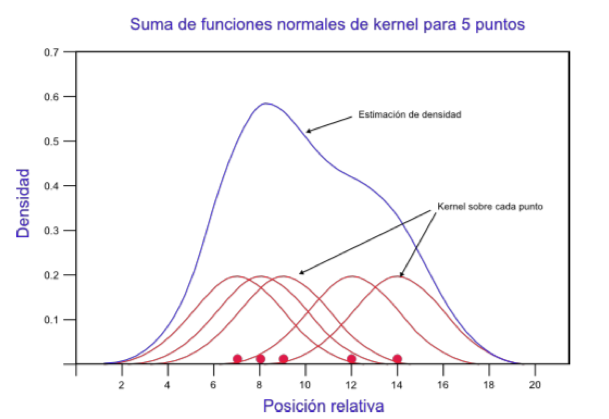
Este enfoque fue adelantado por Fix and Hodges (1951), y formalizado por Rosenblatt (1956). Luego, Silverman (1986) exploró en detalle cómo elegir el ancho de banda y visualizar estas densidades.
A medida que avancemos, verás cómo KDE se adapta al espacio geográfico, permitiéndonos identificar zonas con alta concentración de eventos (como delitos). Eck and Wilson (2005) describe cómo, usando KDE, podemos generar mapas de “hotspots” que sirven para orientaciones prácticas en análisis criminal.
10.2.2 ¿Por qué KDE?
En estadística, es importante saber cómo se distribuyen los datos.
Esto permite:
- Estimar probabilidades
- Simular nuevos valores
- Detectar patrones
El método más simple es el histograma, pero depende del número y tamaño de los intervalos. Cambiarlos puede cambiar la forma de la distribución.
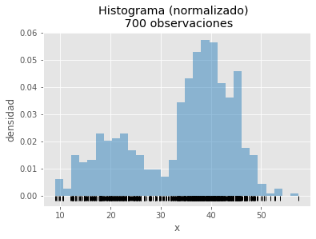
El KDE es una mejora: crea una curva suave y continua que describe mejor la distribución, sin depender de intervalos fijos.
10.2.3 Idea básica
El Kernel density estimation (KDE) expande la idea del histograma, “cada observación aumenta la densidad de probabilidad en la zona donde se encuentra”, pero lo hace de forma que las contribuciones se agrupen creando una curva continua y suave (smooth).
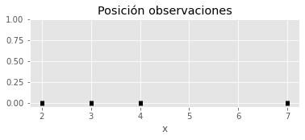
** 1. Cada dato aporta una pequeña “campana” (kernel).**
A continuación, sobre cada observación se centra una distribución normal, con media igual al valor de la observación y desviación típica de 1 (más adelante se detalla la elección de este valor).
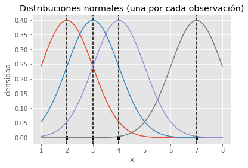
De esta forma se consigue que cada observación contribuya justo en la posición que ocupa pero también, de forma gradual, en las regiones cercanas.
2. Todas las campanas se suman para formar una sola curva.
Por último, si se suman las contribuciones individuales y se dividen por el total de curvas (observaciones), se consigue una curva final que describe la distribución de las observaciones.sy
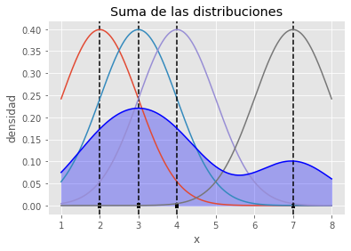
3. El resultado es una estimación continua y suave de la densidad.
En esta idea se fundamenta el método kernel density estimation (KDE): aproximar una función de densidad como la suma de funciones (kernel) de cada observación.
10.2.4 Parámetro de Ancho de Banda en KDE
La clave está en el ancho de banda (h):
- Pequeño → curva muy ajustada, posible sobreajuste.
- Grande → curva demasiado plana, posible subajuste.
Ejemplo visual:
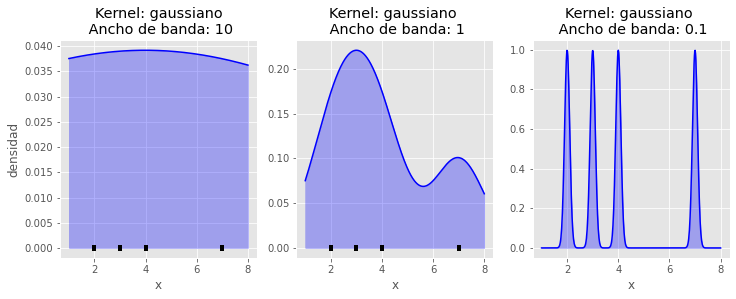
10.2.5 Fórmula general
Dado un conjunto de datos x={x_1,x_2,...,x_n}:
\hat{f}(x)=\frac{1}{nh}\sum_{i=1}^{n}K\left(\frac{x-x_i}{h}\right)
Donde: - n = número de datos
- h = ancho de banda
- K = tipo de kernel (normal, Epanechnikov, etc.)
10.2.6 Aplicación espacial
Para aplicar los KDE a casos espaciales, se tiene que entender que las variables aleatorias antes señaladas, ahora van a corresponder a eventos o condiciones físicas que ocurren en el espacio, por ende bajo un sistema de coordenadas, por lo cual el eje de coordenadas x e y, entonces los que se pretente estimar una distribución multivariante.

Se usa, por ejemplo, en análisis criminal para identificar zonas con mayor concentración de eventos.
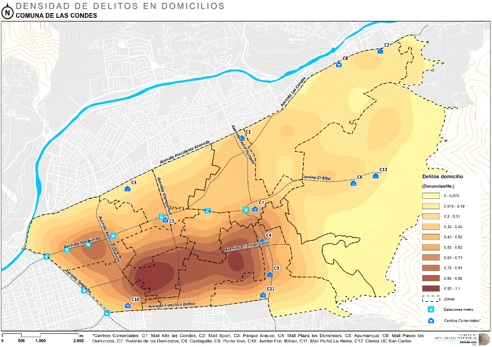
10.2.7 Tipos de kernel
Los más comunes:
Gaussian: asigna los pesos siguiendo la distribución normal con una desviación estándar equivalente al ancho de banda.
Epanechnikov: las observaciones que están a una distancia entre 0 y h tienen un peso entre \frac{3}{4} y 0 con disminución cuadrática. Toda observación fuera de este rango tiene pero 0.
Tophat: Asigna el mismo peso a todas las observaciones que estén dentro del ancho de banda.
Exponential: el peso decae de forma exponencial.
Linear: el peso decae de forma lineal dentro del ancho de banda. Más allá de este el pero es 0.
Cosine: el peso dentro del ancho de banda es proporcional al coseno.
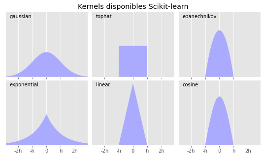
En la práctica, el kernel elegido influye menos que el ancho de banda.
10.2.8 Resumen
- KDE suaviza datos para mostrar su distribución.
- El ancho de banda define el nivel de suavizado.
- En análisis espacial, crea mapas de densidad para fenómenos como delitos, incendios o accidentes.
10.2.9 Caso Práctico: Kernel Density Estimation en delitos Violentos
Objetivo: Construir un mapa de densidad de eventos violentos y derivar un indicador por manzana.
Idea: KDE coloca una “campana” en cada punto y las suma. El ancho de banda controla qué tan suave queda el mapa.
Librerías necesarias
Cargar Librerías
Otros parámetros
set.seed(42) # dejaremos una semilla para los números random
options(scipen = 999) # evitaremos que R convierta a notación científicaInsumos
Lectura de casos violencia (Las Condes, anonimizados espacialmente)
# 1.1 Leer eventos (coordenadas x,y en EPSG:32719 como ejemplo)
violencia_df <- readRDS(file = "data/delitos/casos_violencia.rds")
head(violencia_df) id x y
4423 1 351501.2 6301276
4836 2 359214.9 6303245
4837 3 351866.6 6301303
4844 4 351303.1 6301359
4916 5 351536.6 6301306
5125 6 357105.9 6301723Transformar a Objeto Espacial
violencia <- st_as_sf(x = violencia_df,
coords = c("x", "y"), crs = 32719)Visualización de los datos
# Vistazo rápido
ggplot() +
geom_sf(data = violencia, color = "red",
alpha=0.8, size= 0.1)+
ggtitle("Puntos de Delitos Violentos en Las Condes") +
theme_bw() +
theme(panel.grid.major = element_line(colour = "gray80"),
panel.grid.minor = element_line(colour = "gray80"))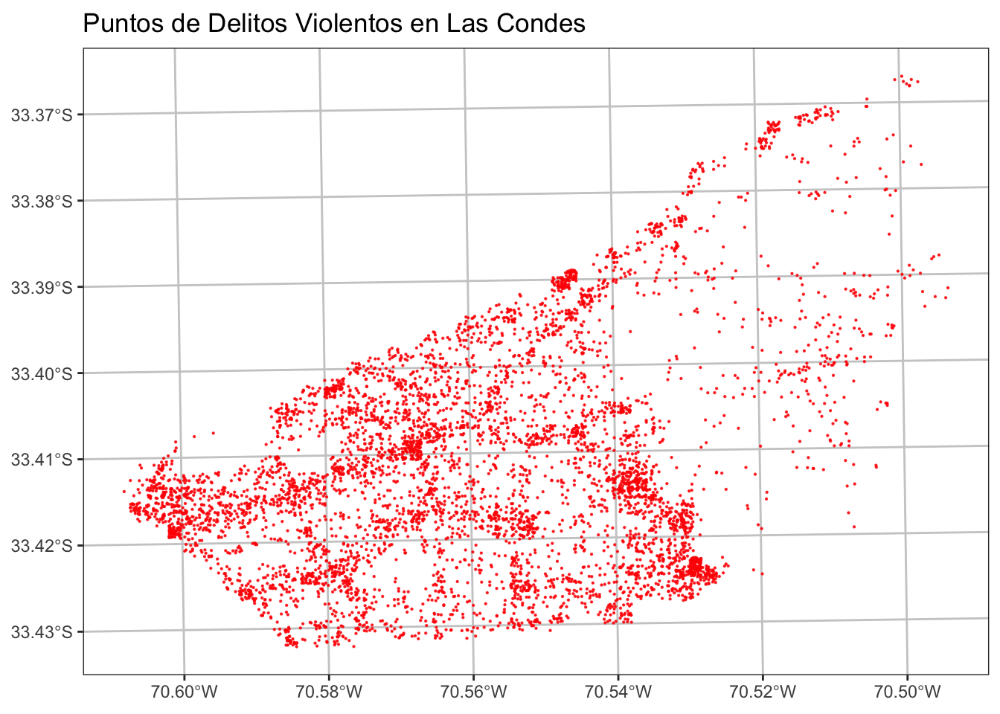
Área de estudio y parámetros de KDE
Usaremos la contorno de los puntos para generar la grilla. Definimos el tamaño de celda y el ancho de banda.
library(SpatialKDE)
#Definirán Parámemetros de Estudio
cell_size <- 100 # Tamaño de Celda
band_width <- 500 # Parámetro de Suavisado (denominada ventana o h)
# Grilla base (raster vacío) con un margen = band_width para evitar borde duro
raster_base <- violencia %>%
create_raster(cell_size = cell_size, side_offset = band_width)KDE (kernel cuártico)
kde_raster <- violencia %>%
kde(band_width = band_width, kernel = "quartic",
grid = raster_base, quiet = TRUE)Histograma de valores de Densidad
# Diagnóstico simple
hist(kde_raster, col="springgreen4", main="Histograma KDE",
ylab="Número de Pixeles", xlab="valor KDE")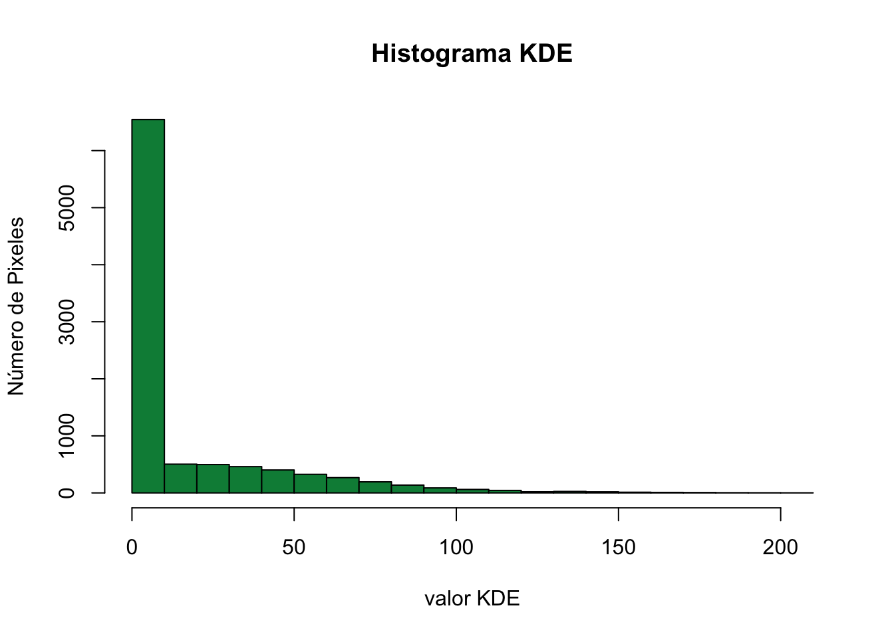
Mapa de densidad (raster)
# Data frame para ggplot
kde_raster_df <- raster::as.data.frame(kde_raster, xy = TRUE)
# eliminar los valores menores a 1 (na omit)
umbral <- 1
kde_raster_df <- kde_raster_df %>%
mutate(layer = ifelse(layer < umbral, NA, layer))%>%
na.omit()kde_delitos_map <- ggplot() +
geom_raster(data = kde_raster_df %>% na.omit() ,
aes(x = x, y = y,
fill = layer)) +
scale_fill_gradientn(name = "KDE",
colors = (viridis::magma(100)), na.value = NA)+
coord_fixed()+
labs(title = "KDE Raster de Delitos",
subtitle = "Comuna de Las Condes") +
theme_bw() +
theme(panel.grid.major = element_line(colour = "gray80"),
panel.grid.minor = element_line(colour = "gray80"))
kde_delitos_map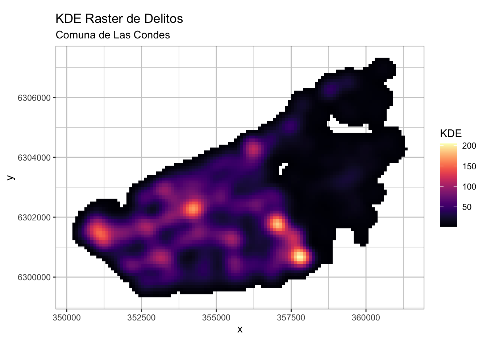
Indicador por manzana
Calculamos el promedio del raster KDE dentro de cada manzana (puedes probar mediana para robustez).
# Leer manzanas de la comuna
mi_comuna <- "LAS CONDES"
mz_comuna <- readRDS("data/censo/manzanas.rds") %>%
filter(NOM_COM == mi_comuna) %>%
st_transform(st_crs(violencia))Se debe extraer los valores de Raster por los polígonos de las manzanas, a estos valores se le aplica una medida estadística como el promedio siendo este el valor representativo de la manzana, lo anterior lo haremos con la funición exact_extract.
library(exactextractr)
# Extraer estadístico (mean)
mz_comuna <- mz_comuna %>%
mutate(idelv = exact_extract(kde_raster,y = ., 'mean',
progress = FALSE))Normalización de Indicador
minmax <- function(x) {
x <- (x - min(x, na.rm = TRUE)) /
(max(x, na.rm = TRUE) - min(x, na.rm = TRUE))
return(x)
}
mz_comuna <- mz_comuna %>%
mutate(imp = minmax(idelv)* 100) #normalizaciónVisualización del Indicador de Delitos Violentos
ind_delitos <- ggplot() +
geom_sf(data = mz_comuna, aes(fill = idelv), color ="gray80",
alpha=0.8, size= 0.1)+
scale_fill_distiller(palette= "Reds", direction = 1)+
labs(title = "Indicador de Delitos Violentos",
subtitle = "Comuna de Las Condes") +
theme_bw() +
theme(panel.grid.major = element_line(colour = "gray80"),
panel.grid.minor = element_line(colour = "gray80"))
ind_delitos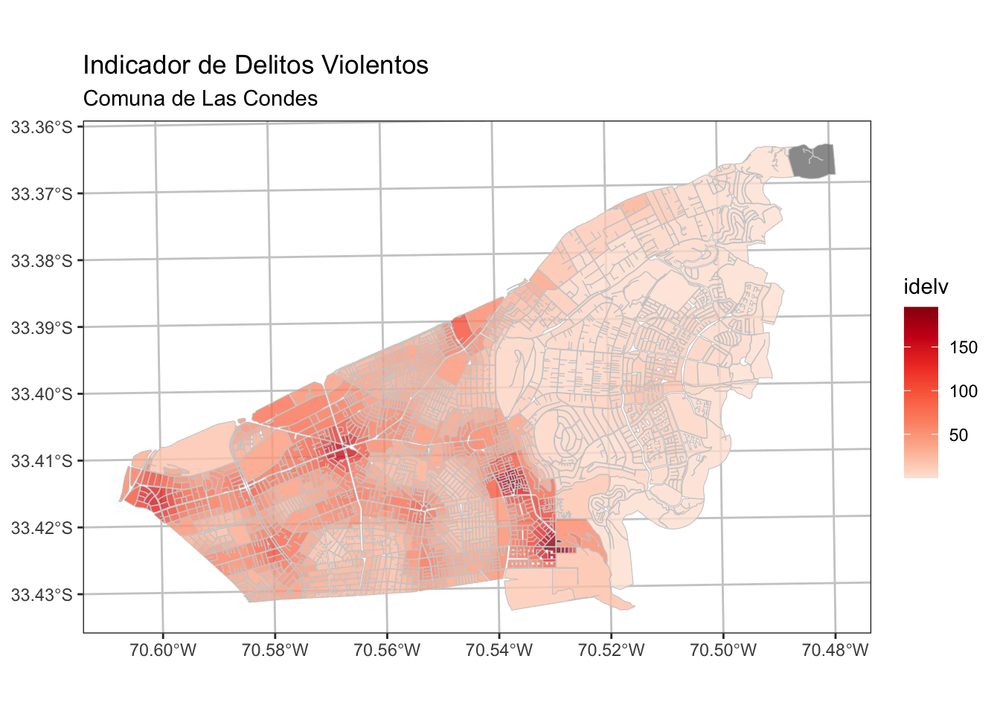
Visualización dinámica con mapview
# Visualización Dinámica
pal_idelv <- colorRampPalette(c("white", "red"))( 100 )
mapview(mz_comuna, zcol = "idelv", col.regions = pal_idelv)Guardar Resultados
# Raster y vector
raster::writeRaster(kde_raster, "data/delitos/kde_delvio_LC.tif",
overwrite = TRUE)
sf::st_write(mz_comuna, "data/delitos/LC_idel.shp",
delete_dsn = TRUE)
# Gráficos
ggsave("mapas/kde_delitos_map_las_condes.png", kde_map,
width = 8, height = 6, dpi = 300)
ggsave("mapas/indicador_delitos_las_condes.png", ind_delitos,
width = 8, height = 6, dpi = 300)10.3 Interpolación Inversa a la Distancia Ponderada (IDW)
10.3.1 ¿Qué es IDW?
La Interpolación Inversa a la Distancia estima valores en lugares donde no hay datos medidos.
La idea es simple:
- Cada punto conocido influye en el punto a estimar.
- Cuanto más cerca está, mayor es su peso en el cálculo.
- Cuanto más lejos, menor es su peso.
Así, los valores estimados son un promedio ponderado por la distancia.
Este tipo de interpolación, determina los valores de celda a través de una combinación ponderada linealmente de un conjunto de datos de puntos de muestra. Esto significa que los puntos de muestreo se ponderan de tal manera que la influencia de un punto frente a otro, disminuye con la distancia.
10.3.2 Ejemplo intuitivo
Imagina un mapa con puntos rojos donde conocemos la elevación.
Si queremos estimar la altura en un punto púrpura, usamos los puntos cercanos, pero damos más peso a los más próximos.
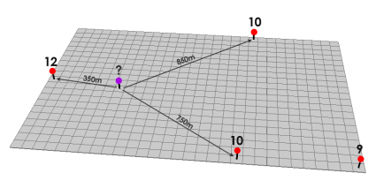
En este ejemplo:
- Se usan los 3 puntos más cercanos.
- Los más próximos tienen mayor peso.
10.3.3 Características principales
- Suaviza valores: el resultado siempre estará entre el mínimo y máximo de los datos originales.
- No crea picos ni valles artificiales: si no hay datos extremos, no aparecerán en la interpolación.
- Sencillo y rápido: no requiere supuestos complejos.
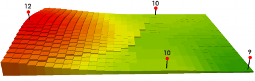
10.3.4 Fórmula general
La estimación para un punto x_0 se calcula así:
\hat{z}(x_0) = \frac{\sum_{i=1}^n w_i z(x_i)}{\sum_{i=1}^n w_i} \qquad \text{donde } w_i = \frac{1}{d(x_0,x_i)^p}
- z(x_i) = valor en el punto i
- d(x_0,x_i) = distancia entre x_0 y x_i
- p = parámetro que controla la influencia de la distancia
10.3.5 Parámetro de potencia
- p alto → solo puntos muy cercanos influyen.
- p bajo → puntos lejanos también tienen peso.
Un valor típico es p = 2.
10.3.6 Resumen
- IDW es fácil de entender y aplicar.
- Funciona bien cuando los puntos están bien distribuidos.
- No predice valores fuera del rango original.
10.3.7 Caso Práctico: Indicador de exposición a PM2.5 con IDW
Objetivo. Estimar una superficie continua de PM2.5 a partir de estaciones de monitoreo (IDW) y derivar un indicador por manzana.
Idea. En IDW, cada estación pesa según su distancia al punto a estimar: más cerca → más peso. Dos parámetros controlan el resultado:
p(potencia): local vs. suave.nmax(vecinos): número máximo de estaciones por celda.
Fuente de datos: Los datos provienen de la red de estaciones de monitoreo de calidad del aire del Sistema Nacional de Información de Calidad del Aire (SINCA), dependiente del Ministerio del Medio Ambiente ( MMA) de Chile. Se utilizaron promedios anuales de PM2.5 entre 2019 y 2023 para la Región Metropolitana, con énfasis en la provincia de Santiago.
PM2.5 corresponde a material particulado fino (diámetro ≤ 2.5 μm), altamente dañino porque puede penetrar profundamente en el sistema respiratorio y la sangre. Sus fuentes principales incluyen combustión de motores, procesos industriales e incendios.
Librarías
# Paquetes
library(sf)
library(dplyr)
library(ggplot2)
library(viridis)
library(terra)
library(gstat)
library(exactextractr)
library(janitor)Lectura de Insumos de contaminación
# Lectura de la base de datos de estaciones
mat_particulado <- readRDS("data/contaminacion/material_particulado.rds")Posteriormente, se procede a filtrar a la provincia de Santiago y convertir la tabla de datos en un objeto espacial ya que cuenta con las coordenadas utilizando la función st_as_sf().
pts_mp_stgo <- mat_particulado %>%
filter(provincia == "Santiago") %>%
st_as_sf(coords = c("longitud", "latitud"), crs = 4326) %>%
st_transform(32719) %>%
janitor::clean_names()Control de Outliers
Recortamos valores extremos usando percentiles 5% y 95%. Esto reduce la influencia de outliers sin eliminar datos.
p <- quantile(pts_mp_stgo$mp2_5, probs = c(0.05, 0.95),
na.rm = TRUE, type = 7)
pts_mp_stgo <- pts_mp_stgo %>%
mutate(pm25_win = pmax(p[1], pmin(mp2_5, p[2])))Visualización rápida
pal_pm2.5 <- colorRampPalette(
c('#fcc5c0','#fa9fb5','#f768a1','#dd3497','#ae017e','#7a0177'))(100)
ggplot() +
geom_sf(data = pts_mp_stgo, aes(color =pm25_win),
linewidth = 0, alpha=0.8, size= 0.8) +
scale_color_gradientn(colors = pal_pm2.5) +
labs(title = "Estaciones Monitoreo",
subtitle = "Valores se le aplicó Winsorización",
fill = "PM 2.5") +
theme_bw() +
theme(
panel.grid.major = element_line(colour = "gray80"),
panel.grid.minor = element_line(colour = "gray80")
)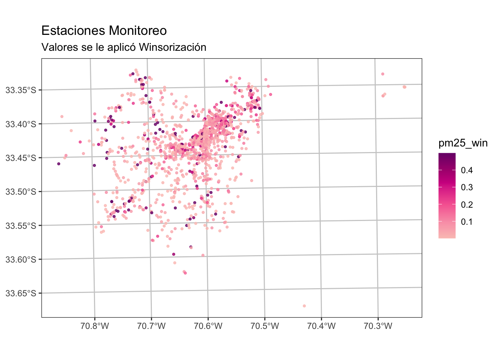
# mapview(pts_mp_stgo, zcol = "pm25_win", color = "gray",
# col.regions = pal_pm2.5, cex =3)Definir ventana de trabajo y grilla
Creamos un raster plantilla con resolución en metros y extraemos puntos-centro de cada celda para la interpolación.
# Parámetros IDW
resolution <- 100 # tamaño de celda (m)
p_power <- 2 # potencia IDW (p=2 típico)
nmax_k <- 8 # vecinos máximos por celda
# Plantilla base
pts_v <- vect(pts_mp_stgo)
r <- rast(ext(pts_v), resolution = resolution, crs = crs(pts_v))
centros <- st_as_sf(as.points(r)) # puntos-centro de cada celdaInterpolación IDW
Ajustamos el modelo y predecimos en cada celda del raster.
idw_fit <- gstat::gstat(
formula = pm25_win ~ 1,
data = st_as_sf(pts_v),
nmax = nmax_k,
set = list(idp = p_power)
)
# Predicción en los centros de celda
pred <- predict(idw_fit, newdata = centros)[inverse distance weighted interpolation]centros$pm25_idw <- pred$var1.predRasterizar y recortar al área de estudio
# Convertir a raster
r_idw <- rasterize(vect(centros), r, field = "pm25_idw")
names(r_idw) <- "pm25_idw"
# Recorte por comuna
zonas <- readRDS("data/censo/zonas_urb_consolidadas.rds")
mi_comuna <- "LAS CONDES"
comuna <- zonas %>%
filter(NOM_COMUNA == mi_comuna) %>%
st_transform(32719)
r_idw_masked <- mask(r_idw, mask = vect(st_union(comuna)))Visualización de IDW
idw_df <- raster::as.data.frame(r_idw_masked, xy = TRUE) %>%
na.omit()
ggplot() +
geom_raster(data = idw_df , aes(x = x, y = y, fill = pm25_idw)) +
scale_fill_gradientn(name = "IDW",
colors = pal_pm2.5, na.value = NA)+
coord_fixed()+
labs(title = "IDW de Material particulado",
subtitle = "Comuna de Las Condes",
fill = "PM 2.5") +
theme_bw() +
theme(panel.grid.major = element_line(colour = "gray80"),
panel.grid.minor = element_line(colour = "gray80"))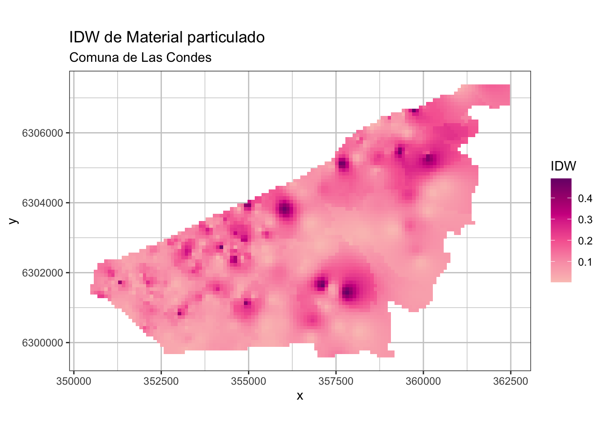
# mapview(r_idw_masked, zcol = "imp2.5", col.regions = pal_pm2.5)Indicador por manzana
Construcción de Indicador de Exposición a Material Particulado fino PM2.5 Calculamos la media del raster IDW en cada polígono y normalizamos 0–100 para comparabilidad.
mz_comuna <- mz_comuna %>%
mutate(imp = exact_extract(r_idw_masked,y = ., 'mean',
progress = FALSE)) Normalización de los valores
# función de normalización
minmax <- function(x) {
x <- (x - min(x, na.rm = TRUE)) /
(max(x, na.rm = TRUE) - min(x, na.rm = TRUE))
return(x)
}
# se convierte en un indicador de exposición
mz_comuna <- mz_comuna %>%
mutate(imp = minmax(imp)* 100) #normlizaciónVisualización del Indicador
Mapa del indicador (0–100):
ind_exsposicion <- ggplot() +
geom_sf(data = mz_comuna, aes(fill = imp), color ="transparent",
alpha=0.8, size= 0.1)+
scale_fill_distiller(palette= "YlOrRd", direction = 1)+
labs(title = "Indicador de Exposición Material Particulado (MP2.5)",
subtitle = "Comuna de Las Condes", fill = "Exposición \nMP2.5") +
theme_bw() +
theme(panel.grid.major = element_line(colour = "gray80"),
panel.grid.minor = element_line(colour = "gray80"))
ind_exsposicion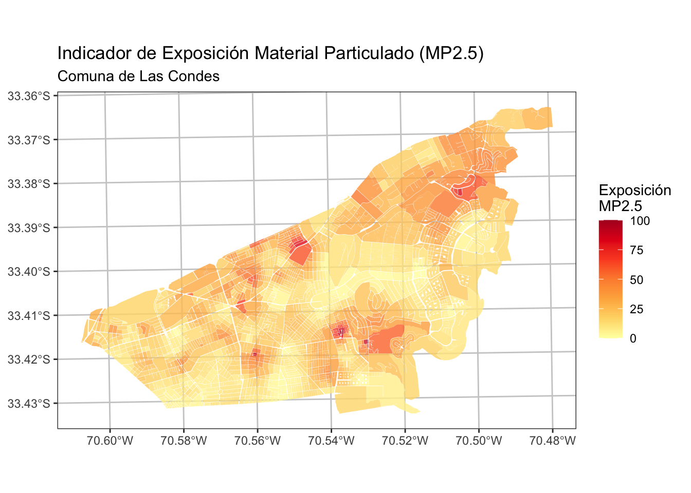
#guardar mapa
ggsave(filename = "mapas/indicador_mp2.5_las_condes.png",
plot = ind_exsposicion, width = 8, height = 6, dpi = 300)# Visualización Dinámica
colores <- c('#ffffcc','#ffeda0','#fed976','#feb24c','#fd8d3c',
'#fc4e2a','#e31a1c','#bd0026','#800026')
pal_imp <- colorRampPalette(colors = colores)(100)
mapview(mz_comuna, zcol = "imp", col.regions = pal_imp)Guardar los Resultados
out_dir <- "data/contaminacion"
# Guardar raster GeoTIFF
writeRaster(r_idw_masked,
filename = file.path(out_dir, "idw_pm25_las_condes.tif"),
overwrite = TRUE)
# También puedes guardar la versión completa (sin recorte)
writeRaster(r_idw,
filename = file.path(out_dir, "idw_pm25_rm.tif"),
overwrite = TRUE)
# Shapefile (para compatibilidad antigua)
st_write(mz_comuna,
dsn = file.path(out_dir, "indicador_pm25_las_condes.shp"),
delete_layer = TRUE)10.4 Referencias
Fix and Hodges (1951) . Discriminatory Analysis, Nonparametric Estimation: Consistency Properties.
Rosenblatt (1956) . Remarks on Some Nonparametric Estimates of a Density Function.
Silverman (1986) . Density Estimation for Statistics and Data Analysis.
Eck and Wilson (2005) . Mapping Crime: Understanding Hot Spots.
Watson and Philip (1985) A Refinement of Inverse Distance Weighted Interpolation.
Ajuste de distribuciones con kernel density estimation y Python
Role of Big Data in the Development of Smart City by Analyzing the Density of Residents in Shanghai
How Is the Confidentiality of Crime Locations Affected by Parameters in Kernel Density Estimation?